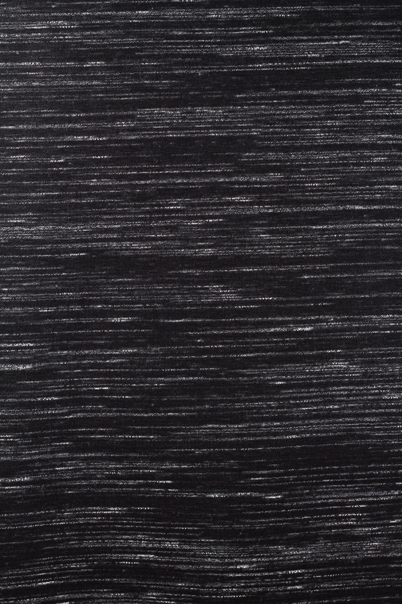
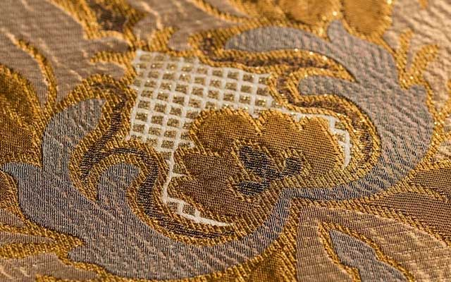
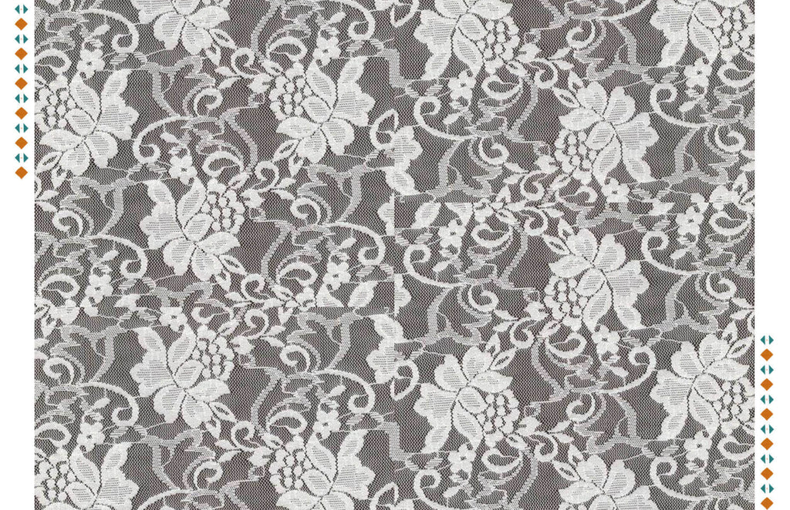
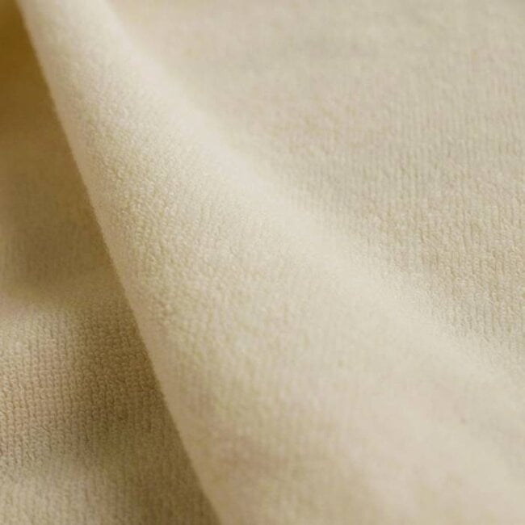
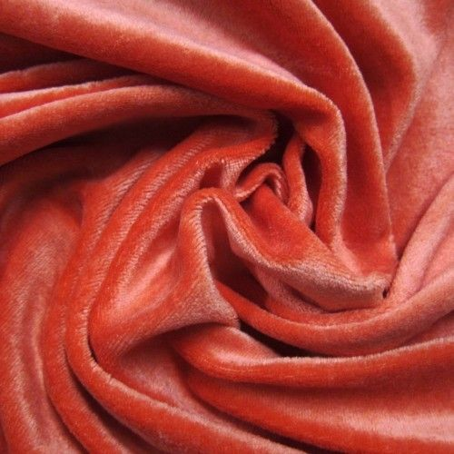
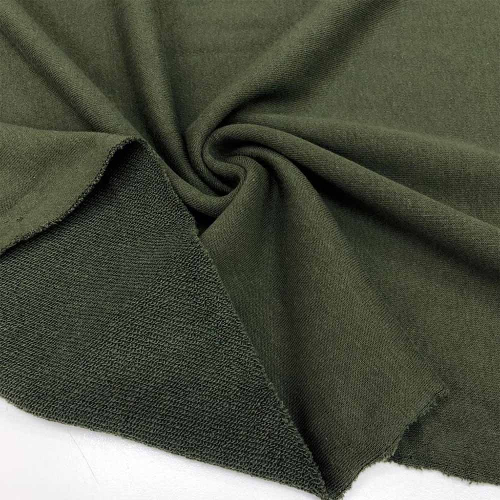
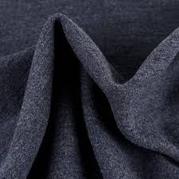
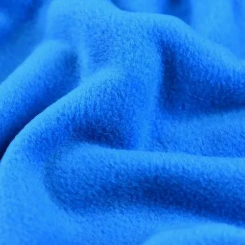
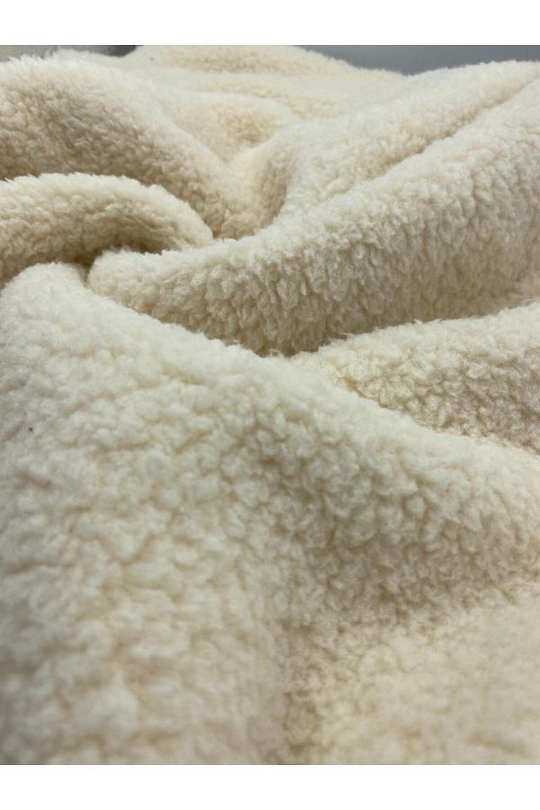
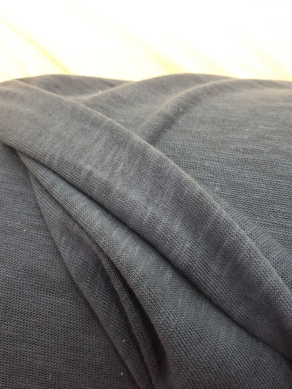

Knit Fabrics

Fancy Knit Fabrics
Fancy knit fabric is made of a single polyester thread or yarn by using needles to create interlocking loops. It is commonly used for making jackets, dresses, skirts, tops, and kids wear etc.
Electronic Jacquard Fabrics
Electronic jacquard is an advanced knitting technology that utilizes electronic control mechanisms to manipulate individual warp threads. Compared to traditional mechanical jacquards, it allows for greater flexibility, speed, and intricate design capacities.
Raschel Knit Fabrics
Raschel knit fabric is a type of warp-knitted fabric, made on a special knitting machine by taking threads from the warp beam. Raschel knits are not particularly stretchy and often have a rather bulky appearance.
Terry Cloth Knit Fabrics
Terry cloth fabric is made of microfibers and shaped into continuous loops. It is a very durable fabric, as much as it is known for its softness.
Velvet
Velvet is a luxurious fabric that is known for its softness. Its perfectly cut fibers give it a smooth feeling and a shiny look.
Three-Thread Fabric
Three-thread fabric structure consists of a face yarn, a binding yarn, and a loop yarn. This structure is produced by tucking in the loop yarn into the binding yarn at different Wales positions.
Interlock Knit Fabric
Interlock knit fabric is a type of knitted textile known for its comfort feeling and smooth appearance. Thanks to its knit structure, it provides better comfort, breathability, and moisture absorbency.
Polar Fabric
Polar fabric is an elastic and lightweight knitted fabric that keeps us warm. It is made of polyester yarn.
Welsoft Knit Fabric
Welsoft fabric is made from a blend of polyester and acrylic fibers, which gives it a silky-smooth texture that is similar to cashmere.